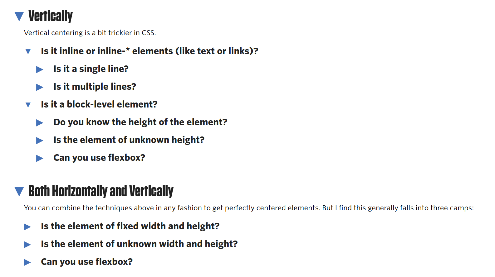
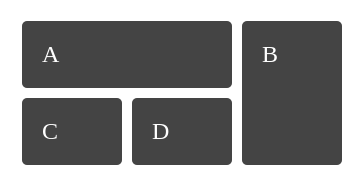
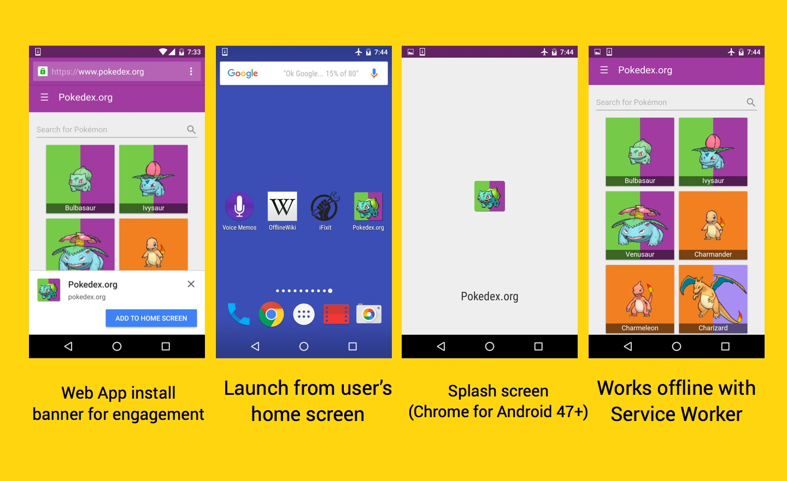

Modern Web Development
HTML5, CSS3, Javascript, and a bit of fluff
Background

- New layout and design techniques
- Javascript frameworks
- New web technology
HTML5 and CSS3
HTML5 Semantic Tags
HTML5 introduced several new tags, including:
- section
- header, footer, nav
- figure, figcaption
- article, section, aside
- audio, video, picture
- canvas
CSS Layouts
Doing layout with HTML and CSS has always been a challenge. First we had tables, then floats. Now, we have more options.
Flexbox
Flexbox is a new layout technique that is very intuitive (sorta) and makes more complicated layouts dead simple.
How it Works
.container {
display: flex;
justify-content: row-reverse;
align-items: center;
}
.child {
flex: 1 1 250px; /* grow | shrink | basis */
}

.container {
display: flex;
justify-content: row-reverse;
align-items: center;
}
.child {
flex: 1 1 250px; /* grow | shrink | basis */
}
Images from https://medium.freecodecamp.com/an-animated-guide-to-flexbox-d280cf6afc35

.container {
display: flex;
justify-content: row-reverse;
align-items: center;
}
.child {
flex: 1 1 250px; /* grow | shrink | basis */
}
Images from https://medium.freecodecamp.com/an-animated-guide-to-flexbox-d280cf6afc35
.container {
display: flex;
justify-content: row-reverse;
align-items: center;
}
.child {
flex: 1 1 250px; /* grow | shrink | basis */
}
Images from https://medium.freecodecamp.com/an-animated-guide-to-flexbox-d280cf6afc35
How it Works
.container {
display: flex;
justify-content: row-reverse;
align-items: center;
}
.child {
flex: 1 1 250px; /* grow | shrink | basis */
}
Vertical Centering?
Image from https://css-tricks.com/centering-css-complete-guide/
Easy as Pie!
.container {
display: flex;
justify-content: center;
align-items: center;
}
Just one item centered?
Blah
Blah
Blah
Blah
.container {
display: flex;
align-items: flex-start;
}
.centered {
align-self: center;
}
CSS Grid
.container {
display: grid;
grid-gap: 10px;
grid-template-columns: 100px 100px 100px;
}
.a {
grid-column: 1 / 3;
grid-row: 1;
}
.b {
grid-column: 3 ;
grid-row: 1 / 3;
}
.c {
grid-column: 1 ;
grid-row: 2 ;
}
.d {
grid-column: 2;
grid-row: 2;
}
Still an upcoming standard, CSS Grid will replace old HTML table layout design and have incredible flexibility.
Taken from http://gridbyexample.com/examples/example5/
CSS Variables
With the introduction of CSS variables, we can lessen the need for CSS pre-processors like LESS or SASS.
:root {
/* Palette generated by Material Palette - materialpalette.com/blue-grey/red */
--primary-color-dark: #455A64
--primary-color: #607D8B
--primary-color-light: #CFD8DC
--primary-color-text: #FFFFFF
--accent-color: #FF5252
--primary-text-color: #212121
--secondary-text-color: #757575
--divider-color: #BDBDBD
}
.container {
background: var(--primary-color-dark);
}
Media Queries
Media queries let CSS react differently to different-sized viewports.
.container {
width: 400px;
margin: 0 auto;
}
@media only screen and (min-width: 670px) {
.container {
width: 600px;
}
}
@media only screen and (min-width: 1080px) {
.container {
width: 900px;
}
}
THE FUTURE
Fetch API
The Fetch API is a new standard for receiving data from sources, replacing XMLHttpRequest.
var myImage = document.querySelector('img');
fetch('flowers.jpg').then(function(response) {
return response.blob();
}).then(function(myBlob) {
var objectURL = URL.createObjectURL(myBlob);
myImage.src = objectURL;
});
Web Components
Already introduced with libraries like Polymer, web components are a way (using the shadow DOM) to write custom HTML tags such as <calendar> or <modal>, tags that are specified in your HTML/JS files.
View on webcomponents.org
Javascript Frameworks
Frameworks are a way to increase developer speed, with features like web components. They also often have features like linting, packing, and hot reload to make development quicker.
Popular JS Frameworks
- React
- Angular
- Ember
- Vue
Vue.js
Vue JS is a framework for building web interfaces, focusing primarly on the view layer. It also works well in tandem with other libraries to create single page apps like the other major frameworks.
The New & Cool Stuff
- Offline First
- Service Workers
- Push API
Offline First
By using service workers and caching, an offline-first approach is far better for the user, both when fully offline and when in 'lie-fi' mode.
Push Notifications
Push notifications are common with native applications, but there is now the ability to do them through the browser using service workers.
Service Workers
Service workers are the replacement for app-cache, and allow developers to do caching and other things with just javascript, not some other format.
How it Works
Install, Fetch, Activate, Message

Install Event
self.addEventListener('install', event => {
event.waitUntil(
// open a cache for the files
global.caches.open(CACHE_NAME)
.then((cache) => {
return cache.addAll(assetsToCache)
})
.then(() => {
console.log('Cached assets: main', assetsToCache)
})
.catch((error) => {
console.error(error);
throw error;
}),
)
})
Fetch Event
self.addEventListener('fetch', function(event) {
event.respondWith(
caches.match(event.request).then((response) => {
// Cache hit - return response
if (response) return response;
// IMPORTANT: Clone the request
var fetchRequest = event.request.clone();
return fetch(fetchRequest).then((response) => {
// Check if we received a valid response
if(!response || response.status !== 200 || response.type !== 'basic') {
return response;
}
// IMPORTANT: Clone the response
var responseToCache = response.clone();
caches.open(CACHE_NAME).then((cache) => {
cache.put(event.request, responseToCache);
});
return response;
}
);
})
);
});
Activate Event
self.addEventListener('activate', (event) => {
// Clean the caches
event.waitUntil(
global.caches.keys().then((names) => {
console.log('cleaning caches')
return Promise.all(
// Ignore caches that aren't ours, and not the current cache
// But delete all the rest to free up space
names.filter(name => {
return (name.startsWith('static-') &&
name != CACHE_NAME);
}).map(name => {
return caches.delete(name)
})
);
})
);
})
Message Event
// sw.js
self.addEventListener('message', (event) => {
if (event.data.action === 'skipWaiting') {
self.skipWaiting();
}
})
// main.js
if (reg.waiting) {
reg.waiting.postMessage({action: 'skipWaiting'});
return;
}
Progressive Web Apps
The culmination is progressive web apps.
